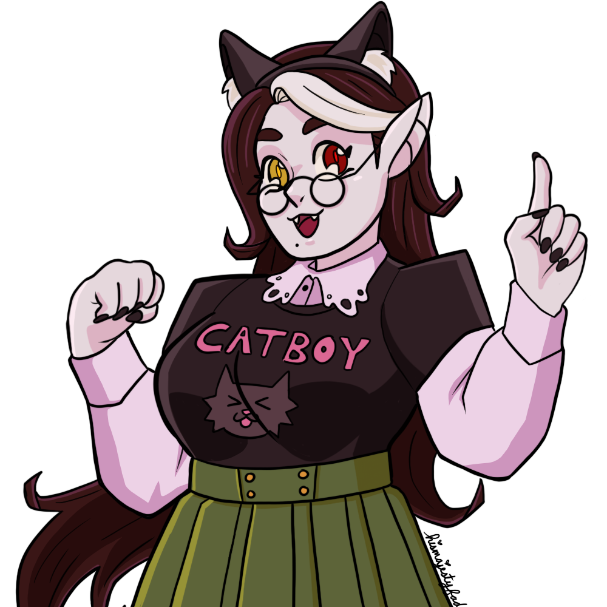

|
|
|
|---|
Hi! I'm Gabriel. I like to think I'm decent at using computers. My ultimate goal is library science, but my current studies are in medieval history and general English literature, particularly Victorian era pop culture. In my spare time I play video games, draw, and collect anime figurines.
  Here's an example of some art I did! It was inspired by the video game 'Monster Prom'.
Here's an example of some art I did! It was inspired by the video game 'Monster Prom'.
And here's some of my figurine collection! I really adore Sailor Pluto from the manga/anime 'Bishoujo Senshi Sailor Moon'.